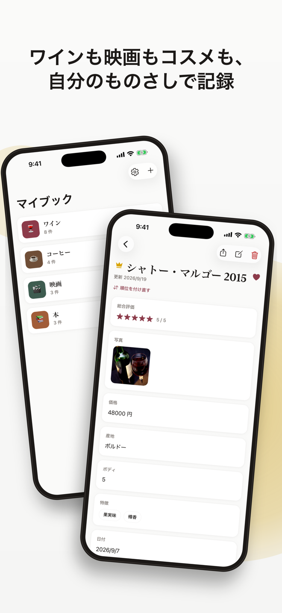
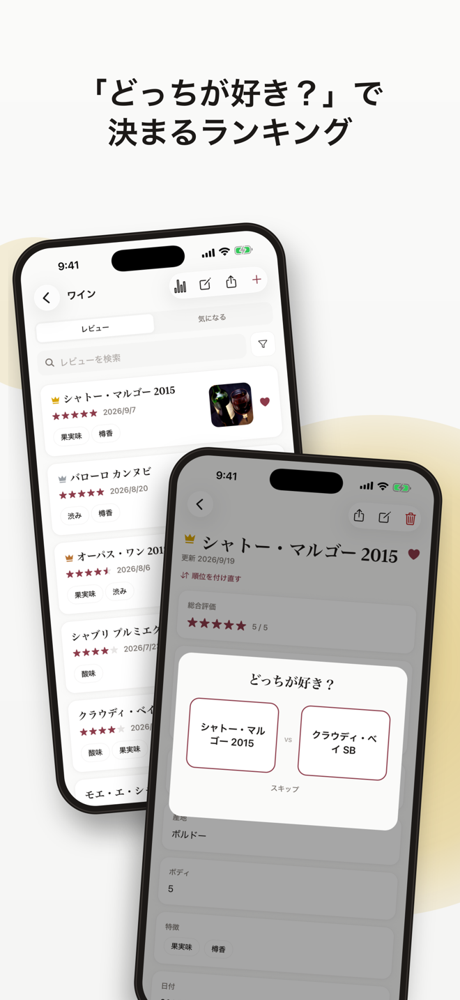
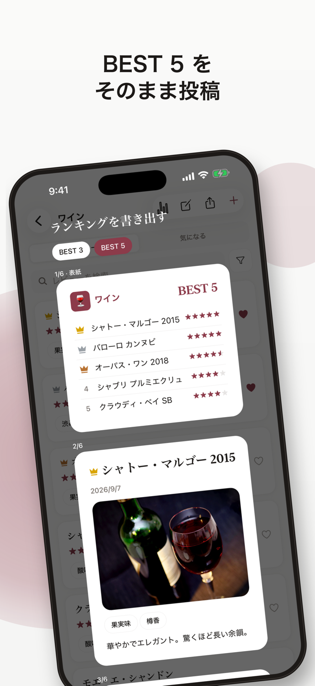

レビューブック
好きなものを記録・評価・ランキング
ワイン、コーヒー、映画、コスメ、読書——好きなものを、自分だけの評価軸で記録する手帳。非公開・アカウント不要で、記録はすべて iPhone の中に。
App Store で入手（無料）


ジャンル別の使い方
レビューブックでできること
- 非公開・アカウント不要
- 投稿も公開もしません。登録なしで、記録は iPhone の中だけに保存されます。
- 自分だけの評価軸
- 星・コメント・写真に加えて、スライダー・選択肢・タグ・日付・数値を組み合わせ、ジャンルごとの「ブック」を作れます。
- 今月・今年で絞ったランキング
- 「どっちが好き？」の 2 択で順位が決まります。期間で絞れば、その期間だけの順位を 1 位から数え直します。
- BEST 5 を画像で書き出し
- ランキングをそのまま 1 枚の画像に。SNS 投稿や振り返りに。